Pose estimation with SLEAP
Introduction to HPC with Linux | 2023-05-15
Course materials
Sample data
/ceph/scratch/neuroinformatics-dropoff/SLEAP_HPC_test_data
- Mouse videos (from Loukia Katsouri)
- SLEAP project with:
- labelled frames
- trained models
- prediction results
Github repository
github.com/neuroinformatics-unit/swc-hpc-pose-estimation
- This presentation
- Example scripts
- Detailed “How To” guide
Tracking animals in videos
Pose estimation

Existing tools
- DeepLabCut
- SLEAP
- Many others:
- OpenPose
- DeepPoseKit
- Anipose
- Freipose
- …

SLEAP workflow

- Training and inference are GPU-intensive
- We can delegate to the HPC cluster’s GPU nodes
Label body parts
- Annotate frames using the
sleap-labelGUI on your PC/laptop - Save project (e.g.
labels.v001.slp)

Configure training
- In the
sleap-labelGUI:Predict/Run Training...

- When ready,
Export training job package...
Training job package contents
labels.v001.slp.training_job.zip => unzip
# Copy of labelled frames
labels.v001.pkg.slp
# Model configuration files
centroid.json
centered_instance.json
# Bash scripts for running training and inference
train_script.sh
inference_script.sh
# Summary of all jobs
jobs.yamlTop-down vs bottom-up

Finding our project on the HPC
# Logging into the HPC cluster
ssh <SWC-USERNAME>@ssh.swc.ucl.ac.uk # Provide password
ssh hpc-gw1 # Provide password again
# Navigate to your SLEAP project
cd /ceph/scratch/neuroinformatics-dropoff/SLEAP_HPC_test_data
# Check the contents of your folder
ls -l
# Go inside the exported training package
cd labels.v001.slp.training_job
ls -l
# View the contents of train-script.sh
cat train-script.shtrain-script.sh
#!/bin/bash
sleap-train centroid.json labels.v001.pkg.slp
sleap-train centered_instance.json labels.v001.pkg.slpGet SLURM to run the script
Suitable for debugging (immediate feedback)
Start an interactive job with one GPU
srun -p gpu --gres=gpu:1 --pty bash -iExecute commands one-by-one, e.g.:
module load SLEAP cd <MY-TRAINING-DIRECTORY> bash train-script.sh # Stop the session exit
Main method for submitting jobs
Prepare a batch script, e.g.
train_script.sbatchSubmit the job:
sbatch train_script.sbatchMonitor job status:
squeue -u <SWC-USERNAME>
Useful for submitting many similar jobs
- Write a batch script
- Execute the script over an array of inputs in parallel
Get the example scripts
# Clone the GitHub repository
$ git clone https://github.com/neuroinformatics-unit/swc-hpc-pose-estimation.git
# List the available scripts for SLEAP
$ cd swc-hpc-pose-estimation/SLEAP/scripts
$ ls -1
infer_script.sbatch
run_sleap_training.py
sleap_topdown_trainer.py
train_script.sbatch
train_script_python.sbatch
train_script_python_array.sbatch
# View the contents of the SLURM train script
cat train_script.sbatchBatch script for training
train_script.sbatch
#!/bin/bash
#SBATCH -p gpu # partition (queue)
#SBATCH -N 1 # number of nodes
#SBATCH --mem 12G # memory pool for all cores
#SBATCH -n 2 # number of cores
#SBATCH -t 0-04:00 # time (D-HH:MM)
#SBATCH --gres gpu:1 # request 1 GPU (of any kind)
#SBATCH -o slurm.%N.%j.out # STDOUT
#SBATCH -e slurm.%N.%j.err # STDERR
#SBATCH --mail-type=ALL
#SBATCH --mail-user=n.sirmpilatze@ucl.ac.uk
# Load the SLEAP module
module load SLEAP
# Define directories for data and exported training job
DATA_DIR=/ceph/scratch/neuroinformatics-dropoff/SLEAP_HPC_test_data
JOB_DIR=$DATA_DIR/labels.v001.slp.training_job
# Go to the job directory
cd $JOB_DIR
# Run the training script generated by SLEAP
./train-script.shSubmit and monitor batch script
# Submit job
$ sbatch train_script.sbatch
Submitted batch job 3445652
# View status of queued/running jobs
$ squeue -u <SWC-USERNAME>
JOBID PARTITION NAME USER ST TIME NODES NODELIST(REASON)
3445652 gpu slurm_ba sirmpila R 23:11 1 gpu-sr670-20
# View status of running/completed jobs
$ sacct -u <SWC-USERNAME>
JobID JobName Partition Account AllocCPUS State ExitCode
------------ ---------- ---------- ---------- ---------- ---------- --------
3445652 slurm_bat+ gpu swc-ac 2 COMPLETED 0:0
3445652.bat+ batch swc-ac 2 COMPLETED 0:0
# View the contents of standard output and error
$ cat slurm.gpu-sr670-20.3445652.out
$ cat slurm.gpu-sr670-20.3445652.errCheck trained models
$ cd /ceph/scratch/neuroinformatics-dropoff/SLEAP_HPC_test_data
$ cd labels.v001.slp.training_job
$ cd models
$ ls -1
230509_141357.centered_instance
230509_141357.centroid
$ cd 230509_141357.centered_instance
$ ls -1
best_model.h5
initial_config.json
labels_gt.train.slp
labels_gt.val.slp
labels_pr.train.slp
labels_pr.val.slp
metrics.train.npz
metrics.val.npz
training_config.json
training_log.csv- View evaluation metrics with the
sleap-labelGUI on your PC/laptop Predict/Evaluation Metrics for Trained Models...
Batch script for inference
infer_script.sbatch
#!/bin/bash
#SBATCH -p gpu # partition (queue)
#SBATCH -N 1 # number of nodes
#SBATCH --mem 12G # memory pool for all cores
#SBATCH -n 2 # number of cores
#SBATCH -t 0-01:00 # time (D-HH:MM)
#SBATCH --gres gpu:1 # request 1 GPU (of any kind)
#SBATCH -o slurm.%N.%j.out # STDOUT
#SBATCH -e slurm.%N.%j.err # STDERR
#SBATCH --mail-type=ALL
#SBATCH --mail-user=n.sirmpilatze@@ucl.ac.uk
# Load the SLEAP module
module load SLEAP
# Define data directory
DATA_DIR=/ceph/scratch/neuroinformatics-dropoff/SLEAP_HPC_test_data
# Define exported job directory
JOB_DIR=$DATA_DIR/labels.v001.slp.training_job
# Go to the job directory
cd $JOB_DIR
# Run the inference command
sleap-track $DATA_DIR/videos/M708149_EPM_20200317_165049331-converted.mp4 \
-m $JOB_DIR/models/230509_141357.centroid/training_config.json \
-m $JOB_DIR/models/230509_141357.centered_instance/training_config.json \
--gpu auto \
--tracking.tracker none \
-o labels.v001.slp.predictions.slp \
--verbosity json \
--no-empty-framesCheck the predictions
$ cd /ceph/scratch/neuroinformatics-dropoff/SLEAP_HPC_test_data
$ cd labels.v001.slp.training_job
$ ls -1
centered_instance.json
centroid.json
inference-script.sh
jobs.yaml
labels.v001.pkg.slp
labels.v001.slp.predictions.slp
models
train-script.sh- Inspect the predictions with the
sleap-labelGUI on your PC/laptop
The training - inference cycle
- Correct some of the predictions: see Prediction-assisted labeling
- Merge corrected labels into the initial training set: see Merging guide
- Save the merged training set as
labels.v002.slp - Export a new training job
labels.v002.slp.training_job(you may reuse the training configurations fromv001) - Repeat the training-inference cycle until satisfied
Batching Python scripts
- So far we have submitted shell scripts/commands
- essentially using the command-line interface of SLEAP
- We can also submit Python scripts
- using the Python API of SLEAP
- or any custom Python code
Example Python script
run_sleap_training.py
import argparse
from pathlib import Path
from sleap_topdown_trainer import SLEAPTrainer_TopDown_SingleInstance
TEST_DATA_DIR = Path("/ceph/scratch/neuroinformatics-dropoff/SLEAP_HPC_test_data")
def main(batch_size=4):
"""Train SLEAP model with variable batch size."""
...
if __name__ == "__main__":
parser = argparse.ArgumentParser(
description="Train SLEAP model with variable batch size."
)
parser.add_argument(
"--batch-size",
"--batch_size",
"-b",
type=int,
default=4,
dest="batch_size",
help="Batch size for training (default: 4)",
)
args = parser.parse_args()
main(batch_size=args.batch_size)Example batch script
train_script_python.sbatch
#!/bin/bash
#SBATCH -p gpu # partition (queue)
#SBATCH -N 1 # number of nodes
#SBATCH --mem 12G # memory pool for all cores
#SBATCH -n 2 # number of cores
#SBATCH -t 0-04:00 # time (D-HH:MM)
#SBATCH --gres gpu:1 # request 1 GPU (of any kind)
#SBATCH -o slurm.%N.%j.out # STDOUT
#SBATCH -e slurm.%N.%j.err # STDERR
#SBATCH --mail-type=ALL
#SBATCH --mail-user=n.sirmpilatze@ucl.ac.uk
# Load the SLEAP module
module load SLEAP
# Define directory for Python scripts
DATA_DIR=/ceph/scratch/neuroinformatics-dropoff/SLEAP_HPC_test_data
CODE_DIR=$DATA_DIR/swc-hpc-pose-estimation/SLEAP/scripts
cd $CODE_DIR
# Run the Python script (for batch size 4)
python run_sleap_training.py --batch-size 4Array jobs
What if we want to run the previous script for multiple batch sizes?
Solution: submit an array job

- the jobs will run in parallel if there are enough resources
- otherwise, they will be scheduled to run sequentially
Example array job
train_script_python_array.sbatch
#!/bin/bash
#SBATCH -p gpu # partition (queue)
#SBATCH -N 1 # number of nodes
#SBATCH --mem 12G # memory pool for all cores
#SBATCH -n 2 # number of cores
#SBATCH -t 0-04:00 # time (D-HH:MM)
#SBATCH --gres gpu:rtx2080:1 # request specific GPU type (rtx2080)
#SBATCH -o slurm.%N.%j.out # STDOUT
#SBATCH -e slurm.%N.%j.err # STDERR
#SBATCH --mail-type=ALL
#SBATCH --mail-user=n.sirmpilatze@ucl.ac.uk
#SBATCH --array=1-3
# Load the SLEAP module
module load SLEAP
# Define directory for Python scripts
DATA_DIR=/ceph/scratch/neuroinformatics-dropoff/SLEAP_HPC_test_data
CODE_DIR=$DATA_DIR/swc-hpc-pose-estimation/SLEAP/scripts
cd $CODE_DIR
# Run the Python script across batch sizes 2, 4, 8
ARGS=(2 4 8)
python run_sleap_training.py --batch-size "${ARGS[$SLURM_ARRAY_TASK_ID]}"Useful links
Pose estimation
SWC wiki
Acknowledgements
- Alex Martin (setting up HPC modules)
- Loukia Katsouri (mouse videos)
- Laura Schwarz and Tom Hagley (SLEAP workflow)
- Chang Huan Lo (SLEAP Python code)